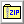

More photos can be viewed on this page.
 Sinclair's
ZX Spectrum is one of the most widely cloned computers ever made.As early
as the mid 1980's, people were reverse-engineering the ULA, the custom
IC that provided the Spectrum with much of its functionality. Much of this
early cloning work happened in countries where the original Spectrum was
hard to find, usually due to international trade restrictions.
Sinclair's
ZX Spectrum is one of the most widely cloned computers ever made.As early
as the mid 1980's, people were reverse-engineering the ULA, the custom
IC that provided the Spectrum with much of its functionality. Much of this
early cloning work happened in countries where the original Spectrum was
hard to find, usually due to international trade restrictions.
The most notable example of this was the Soviet Union and Eastern Bloc. While affordable homemade computers already existed in this part of the world, there was rarely any financial incentive to write video games during communist times, so there was an incentive to design a computer that could run the hundreds (if not thousands) of Spectrum games that had been written in the West.
Due to Soviet-era supply chain issues, such a computer would need to be designed using the most commonly available parts possible, while still being affordable on the humble average salary of the USSR.
Many Spectrum-compatible computers were designed in the USSR, but the most popular one was the "Leningrad variant", designed by Sergey Zonov in 1988. This design found its way into dozens of mass-produced computers around the USSR, and remained on the market well into the 1990's.
With retro computing becoming a more mainstream hobby, the price of original Sinclair hardware has increased to the point that building your own Spectrum costs about as much as buying an original one.
The Leningrad-M is my second replica of the Leningrad computer. I've replaced all the rare ICs with more common ones, fixed hardware bugs, reduced the size of the PCBs and lowered the component count. The result is a computer that can be built with 38 ICs, a remarkably low amount for a ZX Spectrum clone that doesn't use a programmable logic array.
 While
the Leningrad-M is not 100% compatible with the original ZX Spectrum, I've
found that it works with a remarkably wide range of software, including
demos that rely on obscure programming tricks. Having tested my Leningrad-M
with a decent amount of programs, I'd say 97-98% work with no problems
whatsoever.
While
the Leningrad-M is not 100% compatible with the original ZX Spectrum, I've
found that it works with a remarkably wide range of software, including
demos that rely on obscure programming tricks. Having tested my Leningrad-M
with a decent amount of programs, I'd say 97-98% work with no problems
whatsoever.
The composite video output is monochrome. A DE-9 connector on the upper right of the PCB can be used to connect color video adapters, such as the NIMF-4, which outputs composite video with PAL encoding.
It should be noted that if you live in a country where NTSC is the standard, you may have problems getting your monitor to sync to the 50Hz signal this computer generates. It may be possible to correct this by using a faster crystal oscillator and adjusting the "border width" jumpers on the PCB, but I haven't tested this.
I have made an effort to make this computer as easy to build as possible. The value of almost every component (excluding pin headers and two connectors) is printed on the silkscreen, so it's possible to assemble the whole thing without having to check the bill of materials.
To aid in ease of construction (and cost reduction), the top and bottom of the static-sensitive system PCB can be protected without having to fabricate a case. The keyboard PCB is designed to mount on top of the system PCB with standard nylon M3 screws and standoffs. Since most PCB fabricators require that you order a minimum of 5 boards per design, you can use one of the spare keyboard PCBs to cover the bottom side of the system PCB.
The keyboard and system PCBs are mounted together with 7 M3 nylon standoffs. The keyboard has an extra hole for a standoff that goes through the keyboard and sits on top of the system PCB. These are intended to add structural stability - perfect for fast-paced action games!
 The
ZX Spectrum was designed long before keyboard layouts had been standardized.
In addition, each key corresponds to several BASIC commands, which are
printed on the keys. Unfortunately, nobody makes Cherry MX compatible keycaps
with ZX Spectrum commands printed on them, so you have to make your own.
The
ZX Spectrum was designed long before keyboard layouts had been standardized.
In addition, each key corresponds to several BASIC commands, which are
printed on the keys. Unfortunately, nobody makes Cherry MX compatible keycaps
with ZX Spectrum commands printed on them, so you have to make your own.
I've found that the best way to do this is to order keycaps with removable transparent covers (the same type often seen on point-of-sale terminals) and print out labels to cut out and insert in the keycaps. Such keycaps can be ordered cheaply from eBay or AliExpress under the search term "transparent cover key caps".
The end result is professional-looking (depending on how good your cutting skills are), durable keycaps that won't wear out over time.
A pre-made image of key labels can be downloaded further down the page. I designed it based on a combination of the original Spectrum keyboard and the labels from this Soviet DIY computer kit (which was based on the Leningrad-1).
In total, the keyboard PCB has 40 single width keys in the original ZX Spectrum layout, and one 6.25x width spacebar. To build the keyboard, you'll need:
 If
you don't already have an (E)EPROM programmer, getting Sinclair BASIC onto
a ROM may be difficult.
If
you don't already have an (E)EPROM programmer, getting Sinclair BASIC onto
a ROM may be difficult.
By default, the Leningrad-M uses the original Sinclair ROM data burnt onto a 27128 EPROM. It's possible to use some other models of (E)EPROM, usually if the binary is written to the upper 16 KB of the chip.
Some eBay sellers here in the UK sell pre-programmed EPROMs with newer, open source versions of BASIC on them. These usually come with extra components for modifying an original Spectrum to work with EPROMs, but these aren't needed for Spectrum clones.
I have written an in-depth guide on how to get started programming ROMs on this page, with recommendations for what kind of programmer to buy and a list of other chips that can be used in place of the 27128.
The (E)EPROM programming guide also has a collection of alternative BASIC ROMs available for download.
The schematic can be downloaded in PDF form in the Downloads section of this page.
 The
Leningrad-M's tape interface is compatible with original ZX Spectrum tapes,
with the exception that I haven't been able to get fast loading tapes to
work. This usually isn't a problem, since many programs were re-released
multiple times, and there's normally at least one version without fast
loading.
The
Leningrad-M's tape interface is compatible with original ZX Spectrum tapes,
with the exception that I haven't been able to get fast loading tapes to
work. This usually isn't a problem, since many programs were re-released
multiple times, and there's normally at least one version without fast
loading.
Most Spectrum programs are distributed online as TAP or TZX files - these are binary versions of the stream of data from the tape. These files are designed for use primarily with emulators, and loading them onto real hardware can be difficult.
There's a variety of programs available that can convert these files into more versatile standard audio formats. My favorite one is k7zx for Windows, which you can download further down the page. It's a program from 2008, so it should run on Windows versions going back to XP (maybe 2000), and it runs well on my Windows 10 machine.
Revision 1:
The first Leningrad-M, as seen in the photos.
 Bill of Materials - Keyboard (Interactive)
Bill of Materials - Keyboard (Interactive)
HTML document, 527 KB - A list of all the
components you'll need to build the keyboard PCB.
 Bill of Materials - System (Interactive)
Bill of Materials - System (Interactive)
HTML document, 843 KB - A list of all the
components you'll need to build the system PCB.
 Keyboard Schematic
Keyboard Schematic
PDF document, 319 KB - My schematic for the
keyboard.
 System Schematic
System Schematic
PDF document, 2.60 MB - My mostly annotated
schematic for the Leningrad-M.
 Keyboard PCB Gerbers
Keyboard PCB Gerbers
ZIP archive, 338 KB - PCB for a Cherry MX
compatible keyboard with spacebar.
 System PCB Gerbers
System PCB Gerbers
ZIP archive, 1.05 MB - The PCB for the computer
itself.
 Keyboard Label Sheet
Keyboard Label Sheet
PNG image, 718 KB - Keyboard labels for printing.
Measure how much space is under the keycaps before printing - there's a
DPI guide on the image to aid in getting the labels to be the right size.
Make sure to cut out the labels around the inside of the black outlines.
 Sinclair BASIC ROM
Sinclair BASIC ROM
BIN data, 16.0 KB - Original 1982 Sinclair
48K BASIC.

ZX Spectrum Software - WAV Audio Starter Pack
ZIP archive, 24.6 MB - A collection of Spectrum
programs pre-converted to WAV audio. Please note that the total uncompressed
size of this archive is 392 MB!
 Keyboard PCB KiCad Files
Keyboard PCB KiCad Files
ZIP archive, 827 KB - Useful if you want
to make modifications to the keyboard PCB. Made with KiCad 9.
 System PCB KiCad Files
System PCB KiCad Files
ZIP archive, 3.41 MB - Useful if you want
to make modifications to the system PCB. Made with KiCad 9.
 Keyboard Label Sheet
Keyboard Label Sheet
GIMP XCF image,
5.24 MB - Useful if you want to design your own keyboard labels.
 Leningrad-M Logo (20630 x 3148 px, Transparent) (With USSR Quality Mark)
Leningrad-M Logo (20630 x 3148 px, Transparent) (With USSR Quality Mark)
PNG image, 792 KB - The logo seen at the
top of the page in full resolution.
 Leningrad-M Logo (20630 x 3148 px, Transparent) (Without USSR Quality Mark)
Leningrad-M Logo (20630 x 3148 px, Transparent) (Without USSR Quality Mark)
PNG image, 643 KB - The logo seen at the
top of the page in full resolution.
Custom Fonts
ZIP archive, 297 KB - Custom fonts used for
the KiCad files and XCF label sheet. Only needed if you want to modify
these files.
 k7zx 4.3
k7zx 4.3
ZIP archive, 1.00 MB - A handy Windows utility
for converting TAP/TZX Spectrum emulator files into playable WAV/MP3 audio.
It can also be downloaded here.
Last updated on May 17, 2025.
This page was first uploaded on May 13, 2025.
https://www.Free-Counters.org
visitors since Dec 26, 2025.
{kind=link}
{kind=link}
{kind=link}
{kind=link}
{kind=link}